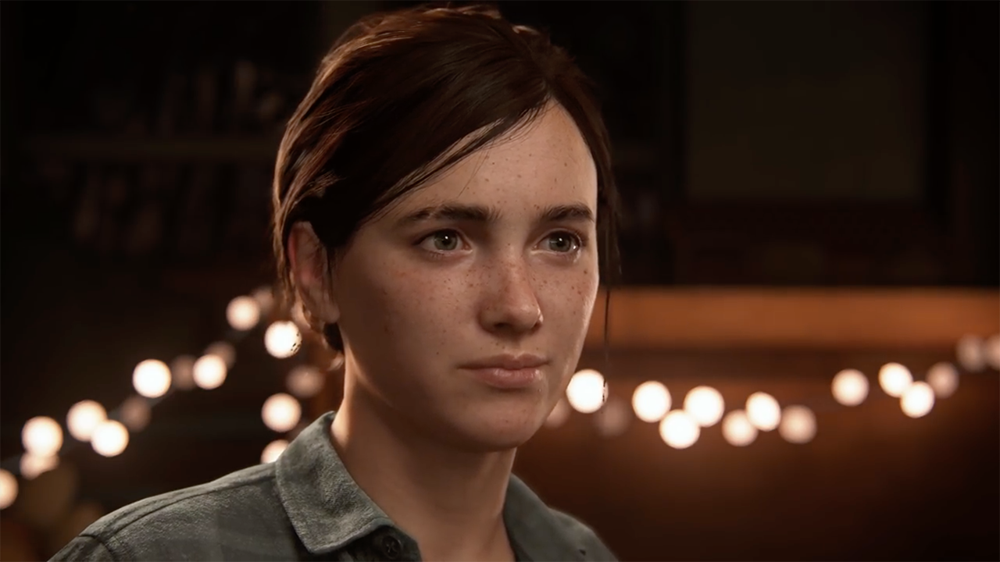
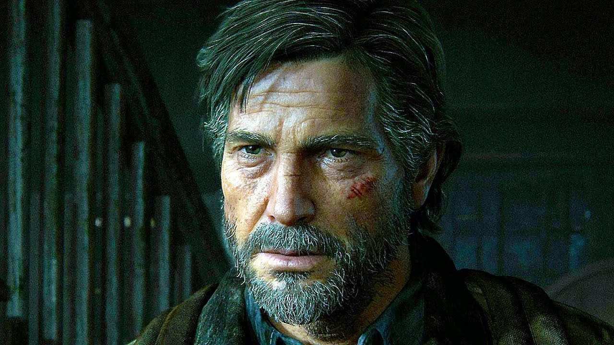
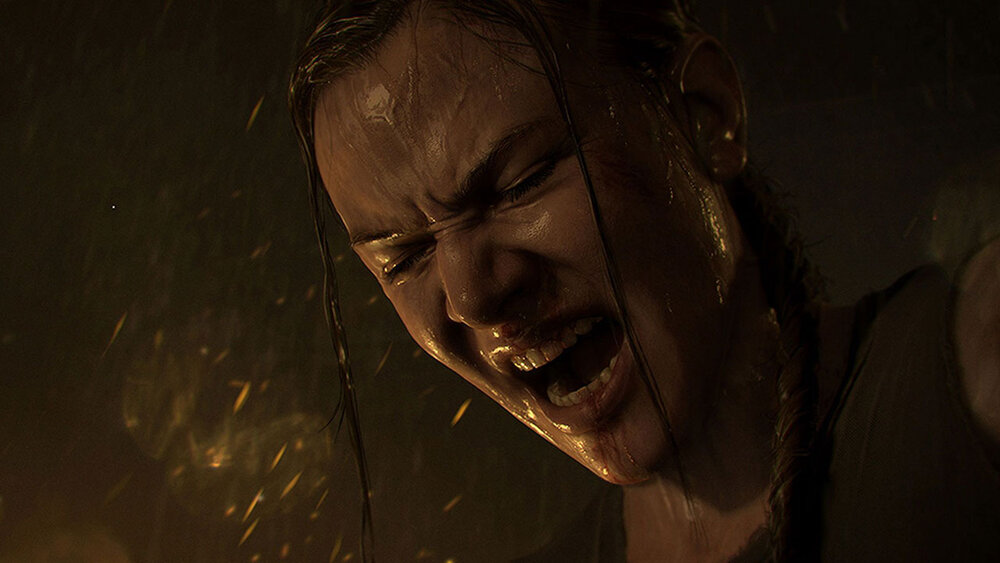
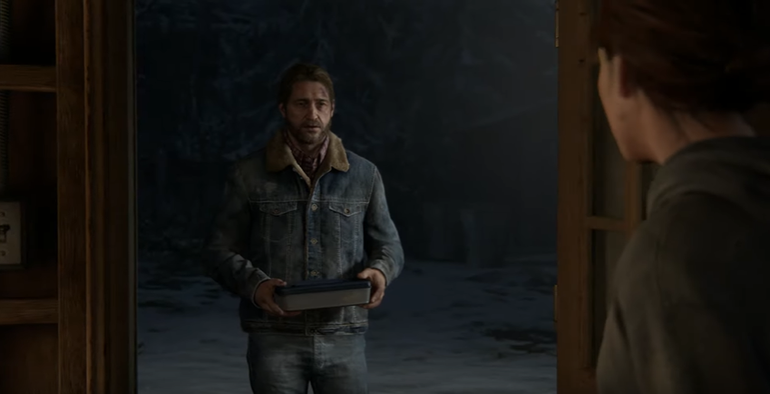
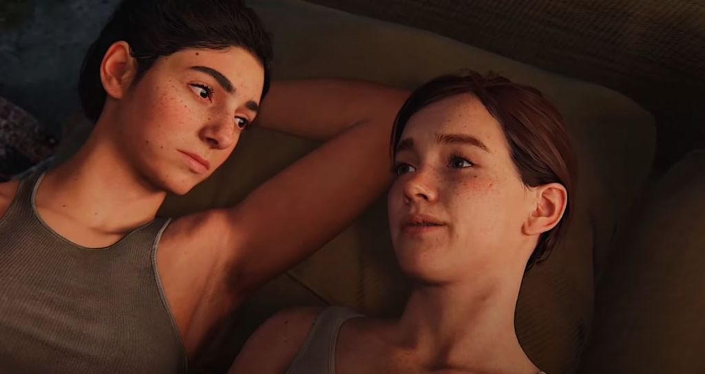
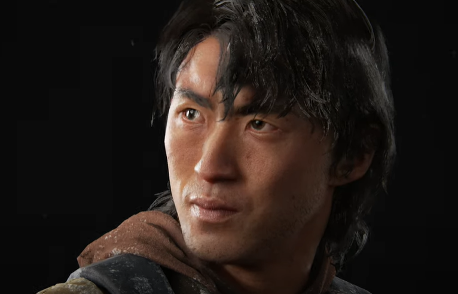
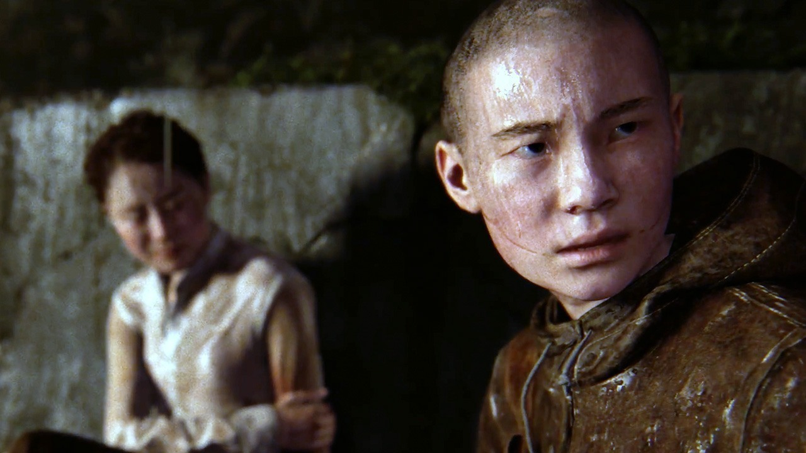
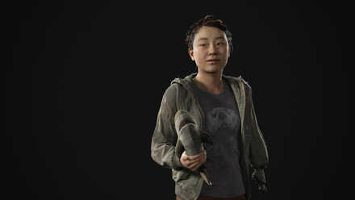

Personagens
Ellie

Mais experiente, Ellie descobre a verdade sobre os fatos do primeiro jogo através do próprio Joel. Após ter vivido em Jackson por quatro anos, a já adolescente protagonista do título tem na segunda parte de The Last of Us uma história de amadurecimento bem mais profunda do que quando nos é apresentada no início da série.
Joel

Joel conta a verdade sobre os Vagalumes para Ellie após quatro anos vivendo em Jackson. Em The Last of Us Parte II ele enfrenta as consequências de suas decisões tomadas no final do primeiro jogo da série.
Abby

Filha de um cirurgião assassinado por Joel, Abby faz parte dos Lobos, um grupo militar com base em Washington. Ao lado de Manny e seus outros companheiros, ela sai de Seattle rumo a Jackson em busca de vingança.
Por mais que pareça uma antagonista para muitos, a interpretação do game coloca ela como uma das principais e mais marcantes personagens de The Last of Us mesmo que não tenha aparecido no início da narrativa.
Tommy

O irmão de Joel continua no comando da comunidade de Jackson, mas tem que colocar a mão na massa após Abby aparecer nos arredores da comunidade em busca por vingança pela morte de seu pai. Neste segundo game da série, o personagem é bem mais ativo.
Dina

Dina é a namorada de Ellie e companheira da protagonista durante a sua busca por respostas. O final do game deixa um questionamento sobre o estado da relação das duas.
Jesse

Jesse, o ex-namorado de Dina, após os acontecimentos em Jackson participa de parte da busca por vingança de Ellie em Seattle. Apesar de pouco tempo de tela, é muito importante em determinados momentos da história.
Lev

Depois de passar por uma transição de gênero, Lily passou a se chamar Lev. O irmão de Yara se desvencilhou do grupo dos Serafitas(ou Cicatrizes) após sua devota mãe lhe designar para um casamento. Reafirmando sua nova identidade, o ato causou indignação e ele foi exilado do bando.
Yara

Irmã de Lev, Yara seguiu o seu irmão após Lev ter sido exilado dos Serafitas. A dupla se junta à WLF (Lobos) e formam um vínculo que interfere diretamente no futuro da antagonista Abby.
Owen
Antes de se juntar aos Lobos, Owen trabalhou ao lado de Jerry Anderson, o pai de Abby, sua ex-namorada. Após o término, o sobrevivente passou a manter relações com Mel.